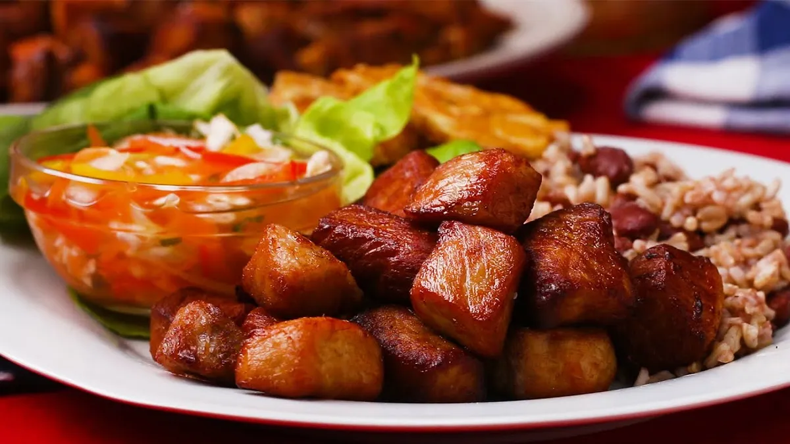
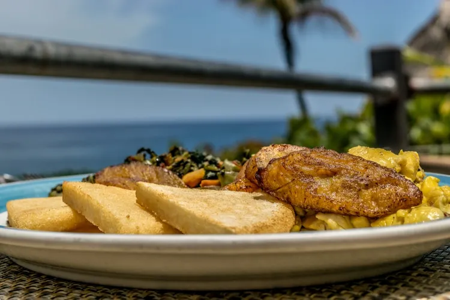
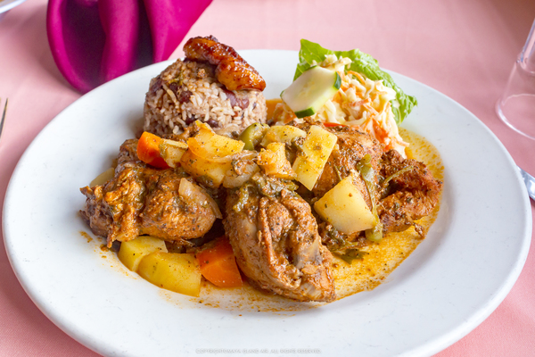
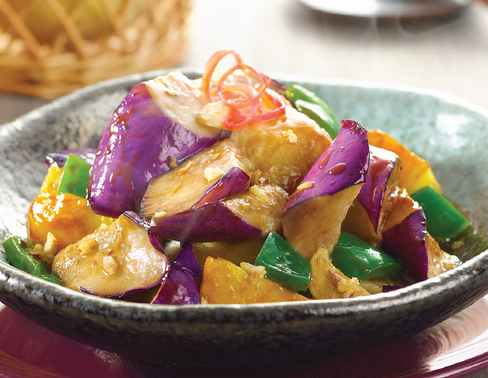

Our main cores will be the best experience you have in our restaurant that bring you the tastes that connect you to the culture you want to discover.
Best Selling Entree of the week:
Image |
Name |
Description |
Price |
|---|---|---|---|
|  | Haitian Griot | Griot is a rich, flavorful dish that is one of Haiti’s most popular foods. It's quick and easy to serve at parties and family gatherings. Cubes of pork are soaked in a sour orange marinade and then slow-roasted until tender. The tender morsels are then given a final fry in oil until delectably caramelized. Griot is undoubtedly a must when it comes to Haitian food. This dish goes great with plantains and a side of pikliz (Haitian pickled vegetable relish). | $27 |
|  | Ackee and Saltfish | Ackee and saltfish is best served immediately. The salt cod can be soaked, cooked, and flaked and stored in an airtight container in the refrigerator for up to one week. Prepared salt cod can also be frozen in an airtight container and kept in the freezer for up to three months. | $28 |

| Veggies Anticucheros | portobello mushroom, jumbo asparagus, caulilini, peruvian potato, choclo with anticuchera, ocopa and chimichurri | $12 |
|  | Rice & Beans | Considered by many as the foundation of Belize, this dish is typically served with your choice of meat, potato salad or coleslaw, rice and beans and plantain. | $18 Chicken $2 extra for Beef or Fish |
 |
Stir-fried Beef with Green Peppers | Beef stir fry is one of the most common stir fry dishes for a Chinese home meal. It is a spontaneous dish, easy to prepare and full of flavors. You could use the vegetable preferred to go with the beef. It is a plate with protein and fibbers, gluten free and can be served within 30 minutes! | $15 |
|  | Disanxian | A Chinese dish made of stir-fried potatoes, eggplants, and sweet peppers. Other ingredients may include garlic, spring onion, etc. The name roughly translates to "three treasures from the earth" because it consists of the three key ingredients listed above. | $15 |